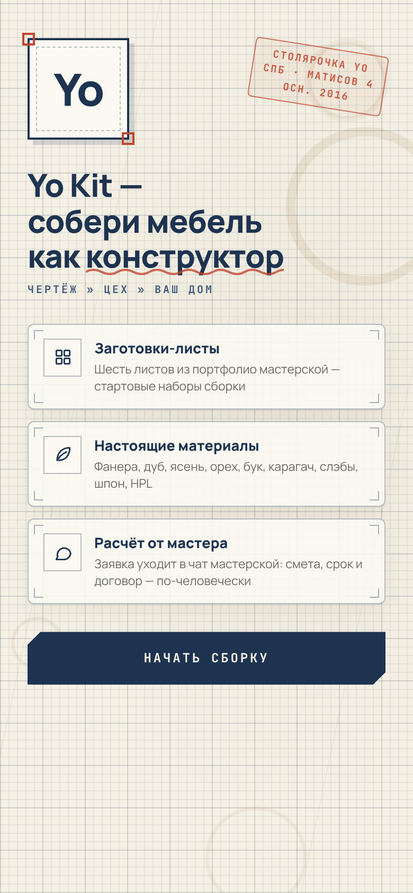
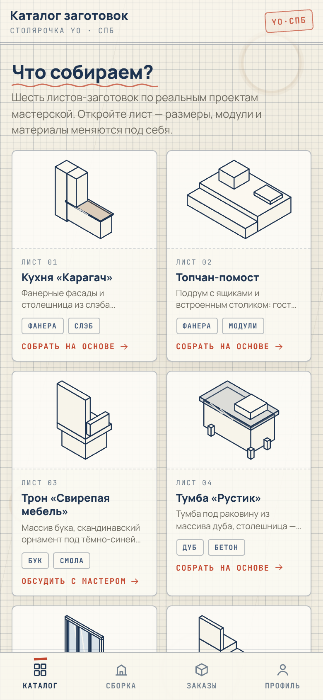
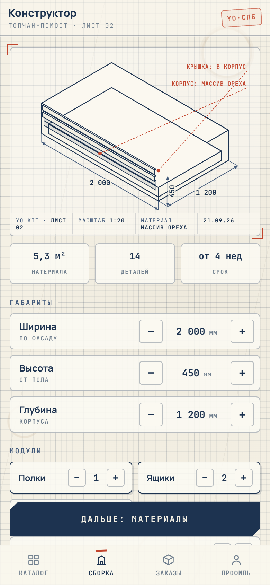
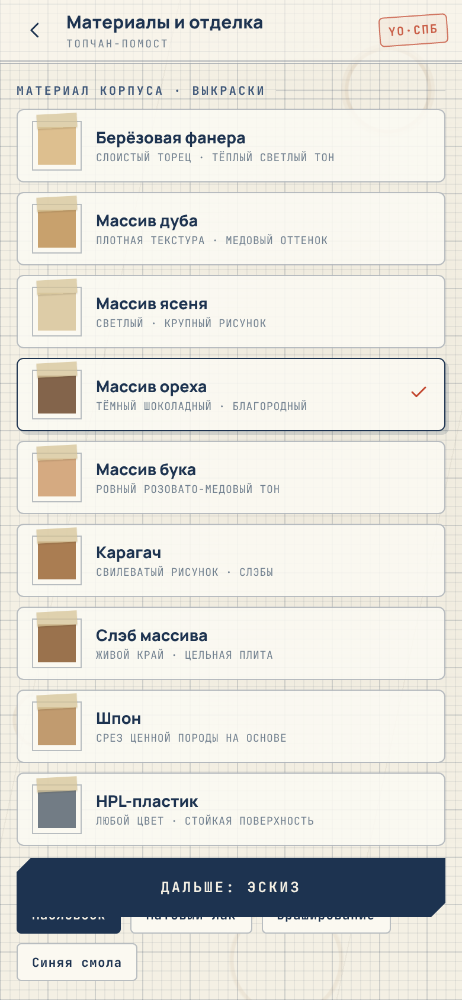
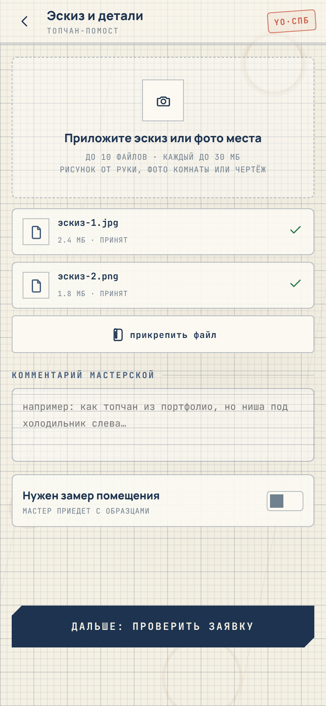
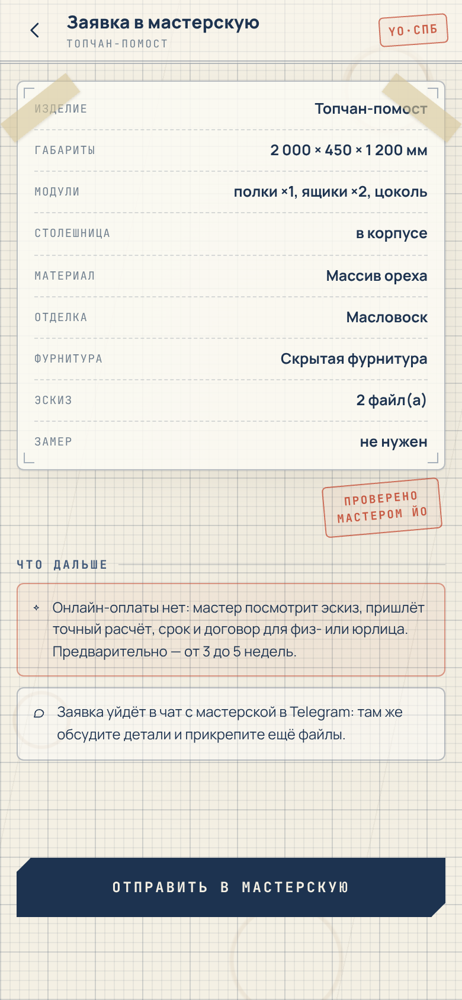
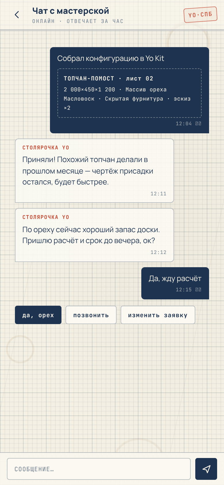
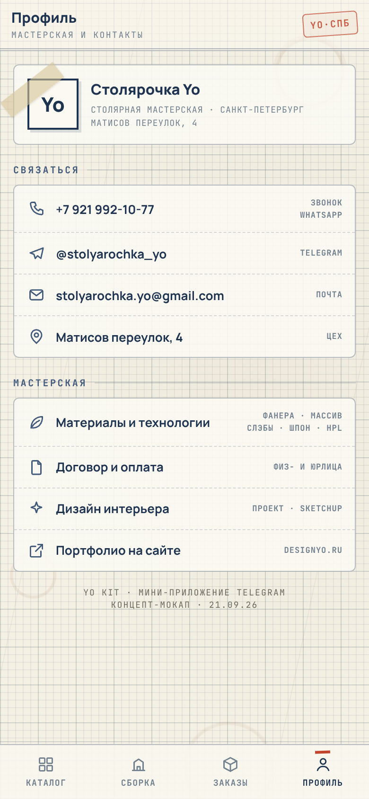

старт01 заставка

старт
каталог
конструктор
материалы
эскиз
заявка
чат заказы
заказы
профильМиллиметровка, кольца кофе, скребки, штампы и малярный скотч поверх точной сетки Telegram Mini App: футуризм чертежа плюс честная работа руками.
Мокап кликабелен в браузере; кадры сняты headless Chromium 390×844 @2x. Чертежи изделий — параметрическая SVG-изометрия, не картинки.
Четыре вкладки: каталог, сборка, заказы, профиль. Материалы, эскиз, смета и чат открываются листами со стрелкой «назад», как папка чертежей.
08 · заказыФотографии интерьеров и отзывы живут на designyo.ru и в соцсетях мастерской. Мини-апп не тянет их внутрь: его язык — чертёж, а сайт остаётся витриной. Из каталога и профиля уходят ссылки на сайт.

Сюда приведёт кнопка мини-приложения и этот QR: заявка из Yo Kit падает в тот же чат, где мастерская уже отвечает клиентам.
Мокап кликабелен: девять экранов, параметрический чертёж и язык ватмана уже работают в браузере. Дальше — каркас бота и настоящий чат мастерской.